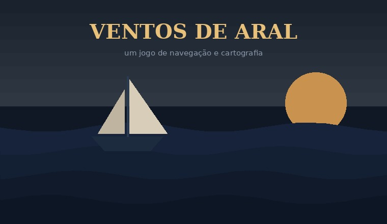

Um jogo de tabuleiro sobre navegação, cartografia e paciência.

Cada jogador comanda um navio cartógrafo no arquipélago de Aral, encarregado de mapear ilhas que ninguém registrou antes. Ganha quem entregar o mapa mais completo — e não quem viajar mais longe.
A graça está no vento. Ele muda a cada rodada e vale para todos ao mesmo tempo, então a rota mais rápida hoje pode ser a pior amanhã. Quase todas as decisões do jogo são sobre esperar ou arriscar.
Uma partida leva por volta de quarenta minutos. As regras completas cabem em quatro páginas, e ninguém precisa decorá-las: o resumo está impresso na borda do tabuleiro.
Raro é um jogo em que ficar parado seja uma jogada tão boa quanto navegar.
Ventos de Aral é um jogo fictício, criado para esta atividade.
Qualquer semelhança com um jogo que você queira jogar é coincidência.